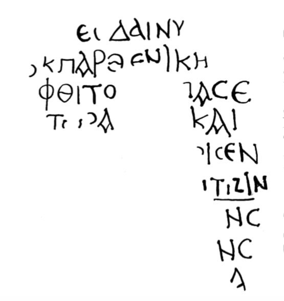

ვაშნარის ბერძნული წარწერაGreek inscription of Vashnari
ვაშნარის ბერძნული წარწერა
Greek inscription of Vashnari
შინაარსი / Summary
მოსახსენებელი Memorial
ბიბლიოგრაფია Bibliography
კრიტიკული გამოცემა Interpretive Edition
ντες δαινυ μένος
ἐκ παρθενικῆς
φθιτὸς ἅπας ε...
ἀλάστωρ (?) α...α καὶ
5ἠδέλφισεν
βαπτίζειν
ν σ...
ενε...
α
დიპლომატიური გამოცემა Diplomatic Edition
ΝΤΕΣ ΔΑΙΝΥ ΜΕΝΟΣ
ΕΚ ΠΑΡΘΕΝΙΚΗΣ
ΦΘΙΤΟΣ ΑΠΑΣΕ
ΑΛΑΣΤΩΡ(?)ΑΑ ΚΑΙ
5ΗΔΕΛΦΙΣΕΝ
ΒΑΠΤΙΖΕΙΝ
ΝΣ
ΕΝΕ
Α

Stone from Vashnari, 1949
{'default': 'მათ, ვისაც ერთად აქვთ პურობა.. საქალებოდან ... გარდაცვლილი და ყოველი ცოდვილი... ძმად შერაცხა (ან შეუმსუბუქა) ნათლისღება. Those who share the bread to … from the women’s chambers... all deceased and sinners...regarded them as brothers and (gave them relief) and baptized.'}
{'default': 'წარწერა მოასწავებს იმას, რომ იმ ბაზილიკური ტიპის ეკლესიას, რომლის ნანგრევებშიც არის ეს ქვა მოპოვებული, ჰქონდა ნაწილები: სანათლავი და საქალებო.\n ძეგლი არქეოლოგთა მიერ V-VIII სს-ით არის დათარიღებული, საკუთრივ ტაძრები - V-VI სს-ით, ტაძრები\n არქიტექტურული თვალსაზრისით VI ს-ით არის დათარიღებული. წარწერა პალეოგრაფიული ნიშნებით (ცალკეული ასოთა მოხაზულობა (α, ε, σ, ζ, φ), ასოთა კუთხეები - ჩაღრმავებული), ენის\n ნორმებით (დაცულია αι-დიფთონგი, არაა დაცული ει-დიფთონგი) VI-VII სს-ით უნდა დათარიღდეს. The word Ἀδελφίζω can be replaced with the word "κουφίζω" according to Tinatin Kaukhchishvili.\nWord Βαπτίζω is represented with the form βαπτιζιν.\nThe inscription proved that the basilica church where this stone was found had types of rooms: baptize room and women’s chambers. According to earlier archaeologists it was dated to V-VIII, the church itself as V-VI century, according to the stylistics of the architecture, these churches can be given VI century. According to paleographic data (the shape of particular letters (α, ε, σ, ζ, φ), the angles of the letter - deeply carved),\n language norms ( αι diphthong present, ει diphthong is not represented) the inscription can be dated to VI-VII centuries.'}
<div type="edition" xml:lang="ka" ana="mtavruli" xml:space="preserve">
<ab>
<lb n="1"/><w lemma="ქრისტე"><expan><abbr>ქ</abbr><ex>რისტ</ex><abbr>ე</abbr></expan></w>
<w lemma="განსუენება"><expan><abbr>გა</abbr><ex>ნ</ex><abbr>ო</abbr><ex>ჳ</ex><abbr>ს</abbr><ex>უ</ex><abbr>ენე</abbr></expan></w>
<w lemma="სულ">სოჳ<lb n="2" break="no"/>ლსა</w>
<name nymRef="ვაჩა">ვაჩაჲს<lb n="3" break="no"/>ასა</name>
<name nymRef="გურა"><expan><abbr>გო</abbr><ex>ჳ</ex><abbr>რაჲ<lb n="4" break="no"/>სასა</abbr></expan></name>
<name nymRef="მირა"><expan><abbr>მ</abbr><ex>ი</ex><abbr>რა</abbr><ex>ჲ</ex><abbr>ს</abbr><ex>ა</ex><abbr>ს</abbr><ex>ა</ex></expan></name>
</ab>
</div>